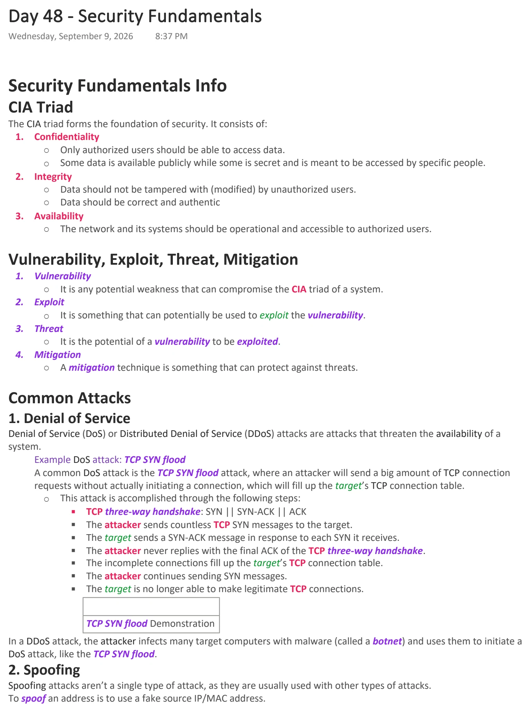
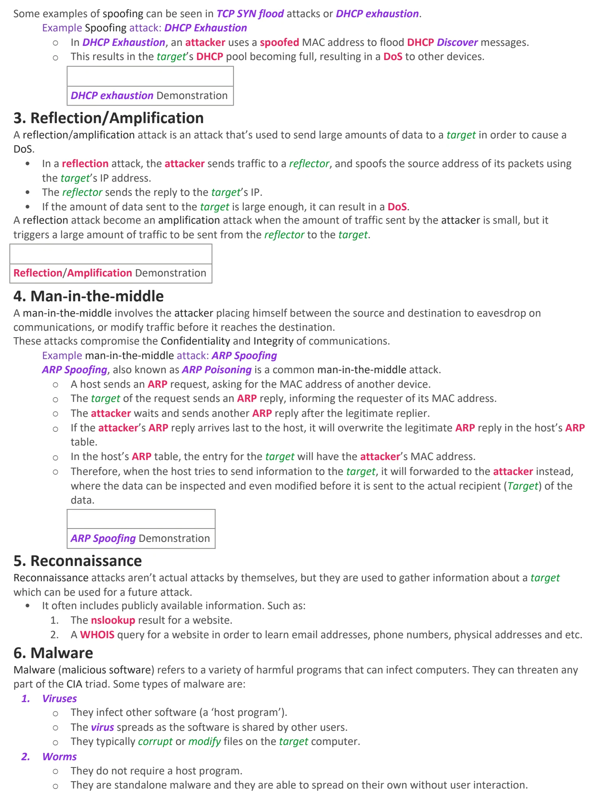
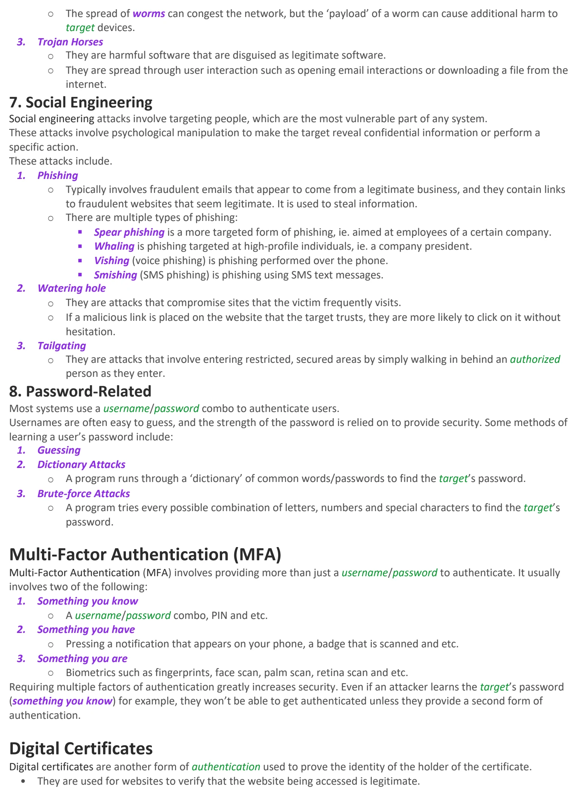
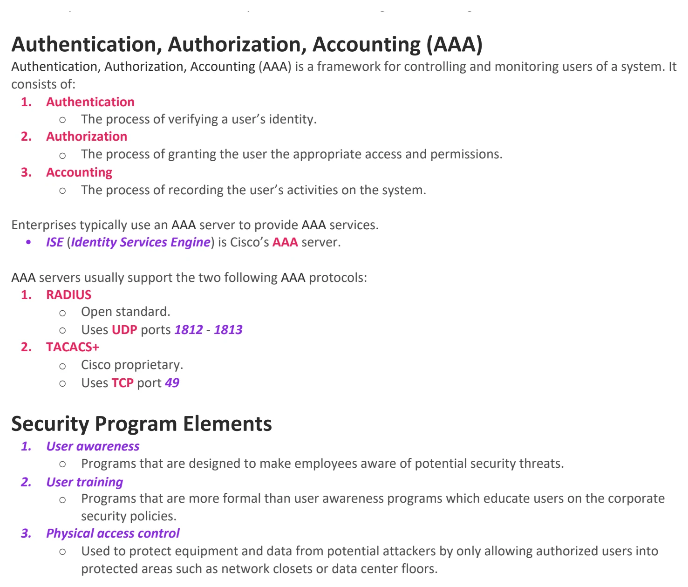

Security Fundamentals
Download original PDF



Text view — Security Fundamentals
Extracted from the original export. Diagrams and some formatting appear in the notes above.
Day 48 - Security Fundamentals Wednesday, September 9, 2026 8:37 PM Security Fundamentals Info CIA Triad The CIA triad forms the foundation of security. It consists of: 1. Confidentiality ○ Only authorized users should be able to access data. ○ Some data is available publicly while some is secret and is meant to be accessed by specific people. 2. Integrity ○ Data should not be tampered with (modified) by unauthorized users. ○ Data should be correct and authentic 3. Availability ○ The network and its systems should be operational and accessible to authorized users. Vulnerability, Exploit, Threat, Mitigation 1. Vulnerability ○ It is any potential weakness that can compromise the CIA triad of a system. 2. Exploit ○ It is something that can potentially be used to exploit the vulnerability. 3. Threat ○ It is the potential of a vulnerability to be exploited. 4. Mitigation ○ A mitigation technique is something that can protect against threats. Common Attacks 1. Denial of Service Denial of Service (DoS) or Distributed Denial of Service (DDoS) attacks are attacks that threaten the availability of a system. Example DoS attack: TCP SYN flood A common DoS attack is the TCP SYN flood attack, where an attacker will send a big amount of TCP connection requests without actually initiating a connection, which will fill up the target’s TCP connection table. ○ This attack is accomplished through the following steps: § TCP three-way handshake: SYN || SYN-ACK || ACK § The attacker sends countless TCP SYN messages to the target. § The target sends a SYN-ACK message in response to each SYN it receives. § The attacker never replies with the final ACK of the TCP three-way handshake. § The incomplete connections fill up the target’s TCP connection table. § The attacker continues sending SYN messages. § The target is no longer able to make legitimate TCP connections. TCP SYN flood Demonstration In a DDoS attack, the attacker infects many target computers with malware (called a botnet) and uses them to initiate a DoS attack, like the TCP SYN flood. 2. Spoofing Spoofing attacks aren’t a single type of attack, as they are usually used with other types of attacks. To spoof an address is to use a fake source IP/MAC address. Some examples of spoofing can be seen in TCP SYN flood attacks or DHCP exhaustion. Example Spoofing attack: DHCP Exhaustion ○ In DHCP Exhaustion, an attacker uses a spoofed MAC address to flood DHCP Discover messages. ○ This results in the target’s DHCP pool becoming full, resulting in a DoS to other devices. DHCP exhaustion Demonstration 3. Reflection/Amplification A reflection/amplification attack is an attack that’s used to send large amounts of data to a target in order to cause a DoS. • In a reflection attack, the attacker sends traffic to a reflector, and spoofs the source address of its packets using the target’s IP address. • The reflector sends the reply to the target’s IP. • If the amount of data sent to the target is large enough, it can result in a DoS. A reflection attack become an amplification attack when the amount of traffic sent by the attacker is small, but it triggers a large amount of traffic to be sent from the reflector to the target. Reflection/Amplification Demonstration 4. Man-in-the-middle A man-in-the-middle involves the attacker placing himself between the source and destination to eavesdrop on communications, or modify traffic before it reaches the destination. These attacks compromise the Confidentiality and Integrity of communications. Example man-in-the-middle attack: ARP Spoofing ARP Spoofing, also known as ARP Poisoning is a common man-in-the-middle attack. ○ A host sends an ARP request, asking for the MAC address of another device. ○ The target of the request sends an ARP reply, informing the requester of its MAC address. ○ The attacker waits and sends another ARP reply after the legitimate replier. ○ If the attacker’s ARP reply arrives last to the host, it will overwrite the legitimate ARP reply in the host’s ARP table. ○ In the host’s ARP table, the entry for the target will have the attacker’s MAC address. ○ Therefore, when the host tries to send information to the target, it will forwarded to the attacker instead, where the data can be inspected and even modified before it is sent to the actual recipient (Target) of the data. ARP Spoofing Demonstration 5. Reconnaissance Reconnaissance attacks aren’t actual attacks by themselves, but they are used to gather information about a target which can be used for a future attack. • It often includes publicly available information. Such as: 1. The nslookup result for a website. 2. A WHOIS query for a website in order to learn email addresses, phone numbers, physical addresses and etc. 6. Malware Malware (malicious software) refers to a variety of harmful programs that can infect computers. They can threaten any part of the CIA triad. Some types of malware are: 1. Viruses ○ They infect other software (a ‘host program’). ○ The virus spreads as the software is shared by other users. ○ They typically corrupt or modify files on the target computer. 2. Worms ○ They do not require a host program. ○ They are standalone malware and they are able to spread on their own without user interaction. ○ The spread of worms can congest the network, but the ‘payload’ of a worm can cause additional harm to target devices. 3. Trojan Horses ○ They are harmful software that are disguised as legitimate software. ○ They are spread through user interaction such as opening email interactions or downloading a file from the internet. 7. Social Engineering Social engineering attacks involve targeting people, which are the most vulnerable part of any system. These attacks involve psychological manipulation to make the target reveal confidential information or perform a specific action. These attacks include. 1. Phishing ○ Typically involves fraudulent emails that appear to come from a legitimate business, and they contain links to fraudulent websites that seem legitimate. It is used to steal information. ○ There are multiple types of phishing: § Spear phishing is a more targeted form of phishing, ie. aimed at employees of a certain company. § Whaling is phishing targeted at high-profile individuals, ie. a company president. § Vishing (voice phishing) is phishing performed over the phone. § Smishing (SMS phishing) is phishing using SMS text messages. 2. Watering hole ○ They are attacks that compromise sites that the victim frequently visits. ○ If a malicious link is placed on the website that the target trusts, they are more likely to click on it without hesitation. 3. Tailgating ○ They are attacks that involve entering restricted, secured areas by simply walking in behind an authorized person as they enter. 8. Password-Related Most systems use a username/password combo to authenticate users. Usernames are often easy to guess, and the strength of the password is relied on to provide security. Some methods of learning a user’s password include: 1. Guessing 2. Dictionary Attacks ○ A program runs through a ‘dictionary’ of common words/passwords to find the target’s password. 3. Brute-force Attacks ○ A program tries every possible combination of letters, numbers and special characters to find the target’s password. Multi-Factor Authentication (MFA) Multi-Factor Authentication (MFA) involves providing more than just a username/password to authenticate. It usually involves two of the following: 1. Something you know ○ A username/password combo, PIN and etc. 2. Something you have ○ Pressing a notification that appears on your phone, a badge that is scanned and etc. 3. Something you are ○ Biometrics such as fingerprints, face scan, palm scan, retina scan and etc. Requiring multiple factors of authentication greatly increases security. Even if an attacker learns the target’s password (something you know) for example, they won’t be able to get authenticated unless they provide a second form of authentication. Digital Certificates Digital certificates are another form of authentication used to prove the identity of the holder of the certificate. • They are used for websites to verify that the website being accessed is legitimate. Authentication, Authorization, Accounting (AAA) Authentication, Authorization, Accounting (AAA) is a framework for controlling and monitoring users of a system. It consists of: 1. Authentication ○ The process of verifying a user’s identity. 2. Authorization ○ The process of granting the user the appropriate access and permissions. 3. Accounting ○ The process of recording the user’s activities on the system. Enterprises typically use an AAA server to provide AAA services. • ISE (Identity Services Engine) is Cisco’s AAA server. AAA servers usually support the two following AAA protocols: 1. RADIUS ○ Open standard. ○ Uses UDP ports 1812 - 1813 2. TACACS+ ○ Cisco proprietary. ○ Uses TCP port 49 Security Program Elements 1. User awareness ○ Programs that are designed to make employees aware of potential security threats. 2. User training ○ Programs that are more formal than user awareness programs which educate users on the corporate security policies. 3. Physical access control ○ Used to protect equipment and data from potential attackers by only allowing authorized users into protected areas such as network closets or data center floors. Day 48 - Security Fundamentals Wednesday, September 9, 2026 8:37 PM Security Fundamentals Info CIA Triad The CIA triad forms the foundation of security. It consists of: 1. Confidentiality ○ Only authorized users should be able to access data. ○ Some data is available publicly while some is secret and is meant to be accessed by specific people. 2. Integrity ○ Data should not be tampered with (modified) by unauthorized users. ○ Data should be correct and authentic 3. Availability ○ The network and its systems should be operational and accessible to authorized users. Vulnerability, Exploit, Threat, Mitigation 1. Vulnerability ○ It is any potential weakness that can compromise the CIA triad of a system. 2. Exploit ○ It is something that can potentially be used to exploit the vulnerability. 3. Threat ○ It is the potential of a vulnerability to be exploited. 4. Mitigation ○ A mitigation technique is something that can protect against threats. Common Attacks 1. Denial of Service Denial of Service (DoS) or Distributed Denial of Service (DDoS) attacks are attacks that threaten the availability of a system. Example DoS attack: TCP SYN flood A common DoS attack is the TCP SYN flood attack, where an attacker will send a big amount of TCP connection requests without actually initiating a connection, which will fill up the target’s TCP connection table. ○ This attack is accomplished through the following steps: § TCP three-way handshake: SYN || SYN-ACK || ACK § The attacker sends countless TCP SYN messages to the target. § The target sends a SYN-ACK message in response to each SYN it receives. § The attacker never replies with the final ACK of the TCP three-way handshake. § The incomplete connections fill up the target’s TCP connection table. § The attacker continues sending SYN messages. § The target is no longer able to make legitimate TCP connections. TCP SYN flood Demonstration In a DDoS attack, the attacker infects many target computers with malware (called a botnet) and uses them to initiate a DoS attack, like the TCP SYN flood. 2. Spoofing Spoofing attacks aren’t a single type of attack, as they are usually used with other types of attacks. To spoof an address is to use a fake source IP/MAC address. Some examples of spoofing can be seen in TCP SYN flood attacks or DHCP exhaustion. Example Spoofing attack: DHCP Exhaustion ○ In DHCP Exhaustion, an attacker uses a spoofed MAC address to flood DHCP Discover messages. ○ This results in the target’s DHCP pool becoming full, resulting in a DoS to other devices. DHCP exhaustion Demonstration 3. Reflection/Amplification A reflection/amplification attack is an attack that’s used to send large amounts of data to a target in order to cause a DoS. • In a reflection attack, the attacker sends traffic to a reflector, and spoofs the source address of its packets using the target’s IP address. • The reflector sends the reply to the target’s IP. • If the amount of data sent to the target is large enough, it can result in a DoS. A reflection attack become an amplification attack when the amount of traffic sent by the attacker is small, but it triggers a large amount of traffic to be sent from the reflector to the target. Reflection/Amplification Demonstration 4. Man-in-the-middle A man-in-the-middle involves the attacker placing himself between the source and destination to eavesdrop on communications, or modify traffic before it reaches the destination. These attacks compromise the Confidentiality and Integrity of communications. Example man-in-the-middle attack: ARP Spoofing ARP Spoofing, also known as ARP Poisoning is a common man-in-the-middle attack. ○ A host sends an ARP request, asking for the MAC address of another device. ○ The target of the request sends an ARP reply, informing the requester of its MAC address. ○ The attacker waits and sends another ARP reply after the legitimate replier. ○ If the attacker’s ARP reply arrives last to the host, it will overwrite the legitimate ARP reply in the host’s ARP table. ○ In the host’s ARP table, the entry for the target will have the attacker’s MAC address. ○ Therefore, when the host tries to send information to the target, it will forwarded to the attacker instead, where the data can be inspected and even modified before it is sent to the actual recipient (Target) of the data. ARP Spoofing Demonstration 5. Reconnaissance Reconnaissance attacks aren’t actual attacks by themselves, but they are used to gather information about a target which can be used for a future attack. • It often includes publicly available information. Such as: 1. The nslookup result for a website. 2. A WHOIS query for a website in order to learn email addresses, phone numbers, physical addresses and etc. 6. Malware Malware (malicious software) refers to a variety of harmful programs that can infect computers. They can threaten any part of the CIA triad. Some types of malware are: 1. Viruses ○ They infect other software (a ‘host program’). ○ The virus spreads as the software is shared by other users. ○ They typically corrupt or modify files on the target computer. 2. Worms ○ They do not require a host program. ○ They are standalone malware and they are able to spread on their own without user interaction. ○ The spread of worms can congest the network, but the ‘payload’ of a worm can cause additional harm to target devices. 3. Trojan Horses ○ They are harmful software that are disguised as legitimate software. ○ They are spread through user interaction such as opening email interactions or downloading a file from the internet. 7. Social Engineering Social engineering attacks involve targeting people, which are the most vulnerable part of any system. These attacks involve psychological manipulation to make the target reveal confidential information or perform a specific action. These attacks include. 1. Phishing ○ Typically involves fraudulent emails that appear to come from a legitimate business, and they contain links to fraudulent websites that seem legitimate. It is used to steal information. ○ There are multiple types of phishing: § Spear phishing is a more targeted form of phishing, ie. aimed at employees of a certain company. § Whaling is phishing targeted at high-profile individuals, ie. a company president. § Vishing (voice phishing) is phishing performed over the phone. § Smishing (SMS phishing) is phishing using SMS text messages. 2. Watering hole ○ They are attacks that compromise sites that the victim frequently visits. ○ If a malicious link is placed on the website that the target trusts, they are more likely to click on it without hesitation. 3. Tailgating ○ They are attacks that involve entering restricted, secured areas by simply walking in behind an authorized person as they enter. 8. Password-Related Most systems use a username/password combo to authenticate users. Usernames are often easy to guess, and the strength of the password is relied on to provide security. Some methods of learning a user’s password include: 1. Guessing 2. Dictionary Attacks ○ A program runs through a ‘dictionary’ of common words/passwords to find the target’s password. 3. Brute-force Attacks ○ A program tries every possible combination of letters, numbers and special characters to find the target’s password. Multi-Factor Authentication (MFA) Multi-Factor Authentication (MFA) involves providing more than just a username/password to authenticate. It usually involves two of the following: 1. Something you know ○ A username/password combo, PIN and etc. 2. Something you have ○ Pressing a notification that appears on your phone, a badge that is scanned and etc. 3. Something you are ○ Biometrics such as fingerprints, face scan, palm scan, retina scan and etc. Requiring multiple factors of authentication greatly increases security. Even if an attacker learns the target’s password (something you know) for example, they won’t be able to get authenticated unless they provide a second form of authentication. Digital Certificates Digital certificates are another form of authentication used to prove the identity of the holder of the certificate. • They are used for websites to verify that the website being accessed is legitimate. Authentication, Authorization, Accounting (AAA) Authentication, Authorization, Accounting (AAA) is a framework for controlling and monitoring users of a system. It consists of: 1. Authentication ○ The process of verifying a user’s identity. 2. Authorization ○ The process of granting the user the appropriate access and permissions. 3. Accounting ○ The process of recording the user’s activities on the system. Enterprises typically use an AAA server to provide AAA services. • ISE (Identity Services Engine) is Cisco’s AAA server. AAA servers usually support the two following AAA protocols: 1. RADIUS ○ Open standard. ○ Uses UDP ports 1812 - 1813 2. TACACS+ ○ Cisco proprietary. ○ Uses TCP port 49 Security Program Elements 1. User awareness ○ Programs that are designed to make employees aware of potential security threats. 2. User training ○ Programs that are more formal than user awareness programs which educate users on the corporate security policies. 3. Physical access control ○ Used to protect equipment and data from potential attackers by only allowing authorized users into protected areas such as network closets or data center floors. Day 48 - Security Fundamentals Wednesday, September 9, 2026 8:37 PM Security Fundamentals Info CIA Triad The CIA triad forms the foundation of security. It consists of: 1. Confidentiality ○ Only authorized users should be able to access data. ○ Some data is available publicly while some is secret and is meant to be accessed by specific people. 2. Integrity ○ Data should not be tampered with (modified) by unauthorized users. ○ Data should be correct and authentic 3. Availability ○ The network and its systems should be operational and accessible to authorized users. Vulnerability, Exploit, Threat, Mitigation 1. Vulnerability ○ It is any potential weakness that can compromise the CIA triad of a system. 2. Exploit ○ It is something that can potentially be used to exploit the vulnerability. 3. Threat ○ It is the potential of a vulnerability to be exploited. 4. Mitigation ○ A mitigation technique is something that can protect against threats. Common Attacks 1. Denial of Service Denial of Service (DoS) or Distributed Denial of Service (DDoS) attacks are attacks that threaten the availability of a system. Example DoS attack: TCP SYN flood A common DoS attack is the TCP SYN flood attack, where an attacker will send a big amount of TCP connection requests without actually initiating a connection, which will fill up the target’s TCP connection table. ○ This attack is accomplished through the following steps: § TCP three-way handshake: SYN || SYN-ACK || ACK § The attacker sends countless TCP SYN messages to the target. § The target sends a SYN-ACK message in response to each SYN it receives. § The attacker never replies with the final ACK of the TCP three-way handshake. § The incomplete connections fill up the target’s TCP connection table. § The attacker continues sending SYN messages. § The target is no longer able to make legitimate TCP connections. TCP SYN flood Demonstration In a DDoS attack, the attacker infects many target computers with malware (called a botnet) and uses them to initiate a DoS attack, like the TCP SYN flood. 2. Spoofing Spoofing attacks aren’t a single type of attack, as they are usually used with other types of attacks. To spoof an address is to use a fake source IP/MAC address. Some examples of spoofing can be seen in TCP SYN flood attacks or DHCP exhaustion. Example Spoofing attack: DHCP Exhaustion ○ In DHCP Exhaustion, an attacker uses a spoofed MAC address to flood DHCP Discover messages. ○ This results in the target’s DHCP pool becoming full, resulting in a DoS to other devices. DHCP exhaustion Demonstration 3. Reflection/Amplification A reflection/amplification attack is an attack that’s used to send large amounts of data to a target in order to cause a DoS. • In a reflection attack, the attacker sends traffic to a reflector, and spoofs the source address of its packets using the target’s IP address. • The reflector sends the reply to the target’s IP. • If the amount of data sent to the target is large enough, it can result in a DoS. A reflection attack become an amplification attack when the amount of traffic sent by the attacker is small, but it triggers a large amount of traffic to be sent from the reflector to the target. Reflection/Amplification Demonstration 4. Man-in-the-middle A man-in-the-middle involves the attacker placing himself between the source and destination to eavesdrop on communications, or modify traffic before it reaches the destination. These attacks compromise the Confidentiality and Integrity of communications. Example man-in-the-middle attack: ARP Spoofing ARP Spoofing, also known as ARP Poisoning is a common man-in-the-middle attack. ○ A host sends an ARP request, asking for the MAC address of another device. ○ The target of the request sends an ARP reply, informing the requester of its MAC address. ○ The attacker waits and sends another ARP reply after the legitimate replier. ○ If the attacker’s ARP reply arrives last to the host, it will overwrite the legitimate ARP reply in the host’s ARP table. ○ In the host’s ARP table, the entry for the target will have the attacker’s MAC address. ○ Therefore, when the host tries to send information to the target, it will forwarded to the attacker instead, where the data can be inspected and even modified before it is sent to the actual recipient (Target) of the data. ARP Spoofing Demonstration 5. Reconnaissance Reconnaissance attacks aren’t actual attacks by themselves, but they are used to gather information about a target which can be used for a future attack. • It often includes publicly available information. Such as: 1. The nslookup result for a website. 2. A WHOIS query for a website in order to learn email addresses, phone numbers, physical addresses and etc. 6. Malware Malware (malicious software) refers to a variety of harmful programs that can infect computers. They can threaten any part of the CIA triad. Some types of malware are: 1. Viruses ○ They infect other software (a ‘host program’). ○ The virus spreads as the software is shared by other users. ○ They typically corrupt or modify files on the target computer. 2. Worms ○ They do not require a host program. ○ They are standalone malware and they are able to spread on their own without user interaction. ○ The spread of worms can congest the network, but the ‘payload’ of a worm can cause additional harm to target devices. 3. Trojan Horses ○ They are harmful software that are disguised as legitimate software. ○ They are spread through user interaction such as opening email interactions or downloading a file from the internet. 7. Social Engineering Social engineering attacks involve targeting people, which are the most vulnerable part of any system. These attacks involve psychological manipulation to make the target reveal confidential information or perform a specific action. These attacks include. 1. Phishing ○ Typically involves fraudulent emails that appear to come from a legitimate business, and they contain links to fraudulent websites that seem legitimate. It is used to steal information. ○ There are multiple types of phishing: § Spear phishing is a more targeted form of phishing, ie. aimed at employees of a certain company. § Whaling is phishing targeted at high-profile individuals, ie. a company president. § Vishing (voice phishing) is phishing performed over the phone. § Smishing (SMS phishing) is phishing using SMS text messages. 2. Watering hole ○ They are attacks that compromise sites that the victim frequently visits. ○ If a malicious link is placed on the website that the target trusts, they are more likely to click on it without hesitation. 3. Tailgating ○ They are attacks that involve entering restricted, secured areas by simply walking in behind an authorized person as they enter. 8. Password-Related Most systems use a username/password combo to authenticate users. Usernames are often easy to guess, and the strength of the password is relied on to provide security. Some methods of learning a user’s password include: 1. Guessing 2. Dictionary Attacks ○ A program runs through a ‘dictionary’ of common words/passwords to find the target’s password. 3. Brute-force Attacks ○ A program tries every possible combination of letters, numbers and special characters to find the target’s password. Multi-Factor Authentication (MFA) Multi-Factor Authentication (MFA) involves providing more than just a username/password to authenticate. It usually involves two of the following: 1. Something you know ○ A username/password combo, PIN and etc. 2. Something you have ○ Pressing a notification that appears on your phone, a badge that is scanned and etc. 3. Something you are ○ Biometrics such as fingerprints, face scan, palm scan, retina scan and etc. Requiring multiple factors of authentication greatly increases security. Even if an attacker learns the target’s password (something you know) for example, they won’t be able to get authenticated unless they provide a second form of authentication. Digital Certificates Digital certificates are another form of authentication used to prove the identity of the holder of the certificate. • They are used for websites to verify that the website being accessed is legitimate. Authentication, Authorization, Accounting (AAA) Authentication, Authorization, Accounting (AAA) is a framework for controlling and monitoring users of a system. It consists of: 1. Authentication ○ The process of verifying a user’s identity. 2. Authorization ○ The process of granting the user the appropriate access and permissions. 3. Accounting ○ The process of recording the user’s activities on the system. Enterprises typically use an AAA server to provide AAA services. • ISE (Identity Services Engine) is Cisco’s AAA server. AAA servers usually support the two following AAA protocols: 1. RADIUS ○ Open standard. ○ Uses UDP ports 1812 - 1813 2. TACACS+ ○ Cisco proprietary. ○ Uses TCP port 49 Security Program Elements 1. User awareness ○ Programs that are designed to make employees aware of potential security threats. 2. User training ○ Programs that are more formal than user awareness programs which educate users on the corporate security policies. 3. Physical access control ○ Used to protect equipment and data from potential attackers by only allowing authorized users into protected areas such as network closets or data center floors. Day 48 - Security Fundamentals Wednesday, September 9, 2026 8:37 PM Security Fundamentals Info CIA Triad The CIA triad forms the foundation of security. It consists of: 1. Confidentiality ○ Only authorized users should be able to access data. ○ Some data is available publicly while some is secret and is meant to be accessed by specific people. 2. Integrity ○ Data should not be tampered with (modified) by unauthorized users. ○ Data should be correct and authentic 3. Availability ○ The network and its systems should be operational and accessible to authorized users. Vulnerability, Exploit, Threat, Mitigation 1. Vulnerability ○ It is any potential weakness that can compromise the CIA triad of a system. 2. Exploit ○ It is something that can potentially be used to exploit the vulnerability. 3. Threat ○ It is the potential of a vulnerability to be exploited. 4. Mitigation ○ A mitigation technique is something that can protect against threats. Common Attacks 1. Denial of Service Denial of Service (DoS) or Distributed Denial of Service (DDoS) attacks are attacks that threaten the availability of a system. Example DoS attack: TCP SYN flood A common DoS attack is the TCP SYN flood attack, where an attacker will send a big amount of TCP connection requests without actually initiating a connection, which will fill up the target’s TCP connection table. ○ This attack is accomplished through the following steps: § TCP three-way handshake: SYN || SYN-ACK || ACK § The attacker sends countless TCP SYN messages to the target. § The target sends a SYN-ACK message in response to each SYN it receives. § The attacker never replies with the final ACK of the TCP three-way handshake. § The incomplete connections fill up the target’s TCP connection table. § The attacker continues sending SYN messages. § The target is no longer able to make legitimate TCP connections. TCP SYN flood Demonstration In a DDoS attack, the attacker infects many target computers with malware (called a botnet) and uses them to initiate a DoS attack, like the TCP SYN flood. 2. Spoofing Spoofing attacks aren’t a single type of attack, as they are usually used with other types of attacks. To spoof an address is to use a fake source IP/MAC address. Some examples of spoofing can be seen in TCP SYN flood attacks or DHCP exhaustion. Example Spoofing attack: DHCP Exhaustion ○ In DHCP Exhaustion, an attacker uses a spoofed MAC address to flood DHCP Discover messages. ○ This results in the target’s DHCP pool becoming full, resulting in a DoS to other devices. DHCP exhaustion Demonstration 3. Reflection/Amplification A reflection/amplification attack is an attack that’s used to send large amounts of data to a target in order to cause a DoS. • In a reflection attack, the attacker sends traffic to a reflector, and spoofs the source address of its packets using the target’s IP address. • The reflector sends the reply to the target’s IP. • If the amount of data sent to the target is large enough, it can result in a DoS. A reflection attack become an amplification attack when the amount of traffic sent by the attacker is small, but it triggers a large amount of traffic to be sent from the reflector to the target. Reflection/Amplification Demonstration 4. Man-in-the-middle A man-in-the-middle involves the attacker placing himself between the source and destination to eavesdrop on communications, or modify traffic before it reaches the destination. These attacks compromise the Confidentiality and Integrity of communications. Example man-in-the-middle attack: ARP Spoofing ARP Spoofing, also known as ARP Poisoning is a common man-in-the-middle attack. ○ A host sends an ARP request, asking for the MAC address of another device. ○ The target of the request sends an ARP reply, informing the requester of its MAC address. ○ The attacker waits and sends another ARP reply after the legitimate replier. ○ If the attacker’s ARP reply arrives last to the host, it will overwrite the legitimate ARP reply in the host’s ARP table. ○ In the host’s ARP table, the entry for the target will have the attacker’s MAC address. ○ Therefore, when the host tries to send information to the target, it will forwarded to the attacker instead, where the data can be inspected and even modified before it is sent to the actual recipient (Target) of the data. ARP Spoofing Demonstration 5. Reconnaissance Reconnaissance attacks aren’t actual attacks by themselves, but they are used to gather information about a target which can be used for a future attack. • It often includes publicly available information. Such as: 1. The nslookup result for a website. 2. A WHOIS query for a website in order to learn email addresses, phone numbers, physical addresses and etc. 6. Malware Malware (malicious software) refers to a variety of harmful programs that can infect computers. They can threaten any part of the CIA triad. Some types of malware are: 1. Viruses ○ They infect other software (a ‘host program’). ○ The virus spreads as the software is shared by other users. ○ They typically corrupt or modify files on the target computer. 2. Worms ○ They do not require a host program. ○ They are standalone malware and they are able to spread on their own without user interaction. ○ The spread of worms can congest the network, but the ‘payload’ of a worm can cause additional harm to target devices. 3. Trojan Horses ○ They are harmful software that are disguised as legitimate software. ○ They are spread through user interaction such as opening email interactions or downloading a file from the internet. 7. Social Engineering Social engineering attacks involve targeting people, which are the most vulnerable part of any system. These attacks involve psychological manipulation to make the target reveal confidential information or perform a specific action. These attacks include. 1. Phishing ○ Typically involves fraudulent emails that appear to come from a legitimate business, and they contain links to fraudulent websites that seem legitimate. It is used to steal information. ○ There are multiple types of phishing: § Spear phishing is a more targeted form of phishing, ie. aimed at employees of a certain company. § Whaling is phishing targeted at high-profile individuals, ie. a company president. § Vishing (voice phishing) is phishing performed over the phone. § Smishing (SMS phishing) is phishing using SMS text messages. 2. Watering hole ○ They are attacks that compromise sites that the victim frequently visits. ○ If a malicious link is placed on the website that the target trusts, they are more likely to click on it without hesitation. 3. Tailgating ○ They are attacks that involve entering restricted, secured areas by simply walking in behind an authorized person as they enter. 8. Password-Related Most systems use a username/password combo to authenticate users. Usernames are often easy to guess, and the strength of the password is relied on to provide security. Some methods of learning a user’s password include: 1. Guessing 2. Dictionary Attacks ○ A program runs through a ‘dictionary’ of common words/passwords to find the target’s password. 3. Brute-force Attacks ○ A program tries every possible combination of letters, numbers and special characters to find the target’s password. Multi-Factor Authentication (MFA) Multi-Factor Authentication (MFA) involves providing more than just a username/password to authenticate. It usually involves two of the following: 1. Something you know ○ A username/password combo, PIN and etc. 2. Something you have ○ Pressing a notification that appears on your phone, a badge that is scanned and etc. 3. Something you are ○ Biometrics such as fingerprints, face scan, palm scan, retina scan and etc. Requiring multiple factors of authentication greatly increases security. Even if an attacker learns the target’s password (something you know) for example, they won’t be able to get authenticated unless they provide a second form of authentication. Digital Certificates Digital certificates are another form of authentication used to prove the identity of the holder of the certificate. • They are used for websites to verify that the website being accessed is legitimate. Authentication, Authorization, Accounting (AAA) Authentication, Authorization, Accounting (AAA) is a framework for controlling and monitoring users of a system. It consists of: 1. Authentication ○ The process of verifying a user’s identity. 2. Authorization ○ The process of granting the user the appropriate access and permissions. 3. Accounting ○ The process of recording the user’s activities on the system. Enterprises typically use an AAA server to provide AAA services. • ISE (Identity Services Engine) is Cisco’s AAA server. AAA servers usually support the two following AAA protocols: 1. RADIUS ○ Open standard. ○ Uses UDP ports 1812 - 1813 2. TACACS+ ○ Cisco proprietary. ○ Uses TCP port 49 Security Program Elements 1. User awareness ○ Programs that are designed to make employees aware of potential security threats. 2. User training ○ Programs that are more formal than user awareness programs which educate users on the corporate security policies. 3. Physical access control ○ Used to protect equipment and data from potential attackers by only allowing authorized users into protected areas such as network closets or data center floors.